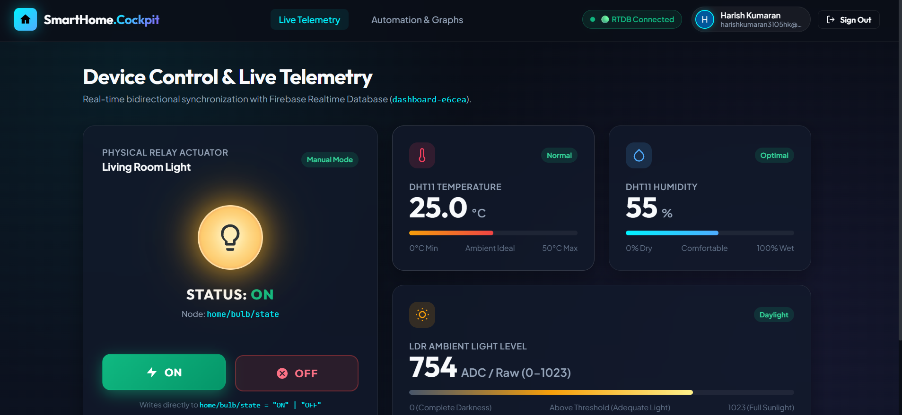

Creating Firebase Realtime Web Dashboard
Build AuraIoT — a Firebase-powered dashboard for live environmental monitoring, relay control, authentication, automation, and telemetry export.
1. Overview
AuraIoT is a production-grade, responsive IoT cloud monitoring and control dashboard built on Google Firebase. Designed to bridge physical edge devices with modern web interfaces, the platform captures live sensor streams from the ESP32, visualizes ambient conditions in real time, and allows bidirectional appliance actuation.
The dashboard integrates live DHT11 temperature and humidity logging, LDR ambient-light sensing, manual and autonomous relay switching modes, secure Firebase Authentication for access control, persistent telemetry table recording, and instant CSV export for offline data analysis. The application is deployed on high-availability Firebase Hosting at dashboard-e6cea.web.app/automation.
2. Dashboard Features
Comprehensive feature matrix incorporated into the AuraIoT web platform:
Live DHT11 Monitoring
Real-time temperature and relative humidity telemetry
LDR Ambient Light
Calibrated Lux readout and 12-bit raw ADC telemetry
Dual Bulb Control
Seamless manual overrides and automated threshold switching
Firebase Auth
Secure user credential authentication and route guards
Realtime Database
Sub-second bidirectional data synchronization via WebSockets
Telemetry Table
Chronological tabular historical data stream view
CSV Data Export
RFC-4180 standard telemetry export for statistical analysis
Firebase Hosting
Global CDN-backed HTTPS production deployment
3. Firebase Architecture
Full-stack architecture tracing telemetry ingestion from edge sensors to cloud storage and bidirectional control actuation:
Edge Perception
Cloud State
Client Runtime
User Interface
Physical Output
Architectural Flow: ESP32 / Sensors → Firebase Realtime Database → JavaScript Web Dashboard → Live Monitoring + Controls → Relay / Automation. The ESP32 and the Web Dashboard both communicate directly with the Firebase Realtime Database JSON tree, eliminating the need to configure and maintain a custom intermediary server.
4. Realtime Database Structure
The Firebase Realtime Database organizes all application states into an optimized NoSQL JSON tree:
{
"telemetry": {
"temperature": 26.9,
"humidity": 44,
"lightLux": 677,
"rawAdc": 2310,
"timestamp": 1711200000000
},
"controls": {
"bulbState": "ON",
"mode": "AUTO"
},
"config": {
"ldrThreshold": 450
}
}Live streaming readings: temperature, humidity, light intensity (Lux), raw 12-bit ADC value, and server timestamps.
State latch for the actuator relay ("ON" or "OFF"), synchronized with physical relay state.
User-configurable lux cut-off point used by automatic threshold algorithms to trigger the relay.
The web dashboard leverages the Firebase JavaScript SDK v10 modular API. Persistent onValue() event listeners attach directly to these JSON references, automatically receiving real-time WebSocket diff updates without periodic HTTP polling overhead.
5. Automation Logic & Telemetry Management
Manual vs. Automatic LDR Modes
Users can toggle between manual software override (clicking on/off switch widgets) and automated mode where ambient light governs bulb states autonomously.
Calibrated Lux Threshold Tiers
Three contextual ambient bands define lighting conditions: 50 Lux (Dark / Night), 450 Lux (Dusk / Twilight trigger threshold), and 1200 Lux (Bright / Daylight).
Threshold-Based Bulb Automation
When light drops below the configured threshold (450 Lux in Dusk mode), the controller or dashboard automatically publishes bulbState = "ON", and de-activates it when light returns.
RFC-4180 CSV Data Export
The dashboard logs chronological telemetry packets in a local buffer and offers one-click RFC-4180 compliant CSV file generation for lab report plotting and academic archiving.
6. Source Code
Core Firebase modular SDK v10 initialization and Realtime Database connection module used by the AuraIoT dashboard:
1import { initializeApp } from "https://www.gstatic.com/firebasejs/10.7.1/firebase-app.js";
2import { getDatabase, ref, onValue, set, get } from "https://www.gstatic.com/firebasejs/10.7.1/firebase-database.js";
3
4const firebaseConfig = {
5 apiKey: "YOUR_FIREBASE_API_KEY",
6 authDomain: "dashboard-e6cea.firebaseapp.com",
7 databaseURL: "https://dashboard-e6cea-default-rtdb.firebaseio.com",
8 projectId: "dashboard-e6cea",
9 storageBucket: "dashboard-e6cea.appspot.com"
10};
11
12const app = initializeApp(firebaseConfig);
13const db = getDatabase(app);
Security & Scope Note: Real API keys are protected and never committed to version control. The snippet above represents the core Firebase modular configuration and database connection foundation; UI rendering, chart drawing, and table management routines attach to db across separate frontend asset files.
7. Testing & Example Telemetry Data
Representative real-time telemetry captured during laboratory benchmarking:
26.9 °C
Ambient Temperature
44 %
Relative Humidity
677 Lux
Ambient Light Intensity
2310 / 4095
Raw 12-Bit ADC Value
8. AuraIoT Firebase Realtime Web Dashboard

Firebase-powered IoT dashboard for realtime monitoring and appliance control.
9. Key Learnings
Firebase Realtime Database
Understood how JSON document trees provide sub-second push updates to connected clients without database polling bottlenecks.
Realtime JavaScript Listeners
Learned to implement onValue() event listeners to immediately mutate the DOM when cloud values change.
Firebase Authentication
Configured client-side authentication guards, ensuring only authenticated operators can actuate physical hardware.
Cloud-Hosted Dashboards
Deployed single-page applications onto Firebase Hosting with automated SSL certification and worldwide CDN delivery.
Manual & Automatic Modes
Designed dual-mode state machines that arbitrate between human operator commands and autonomous sensor-driven triggers.
LDR Threshold Logic
Transformed raw analog light values into calibrated Lux bands for context-aware illumination automation.
Telemetry Management & CSV
Handled dynamic array buffering and client-side RFC-4180 blob generation for seamless spreadsheet telemetry downloads.
Front-End & Cloud Integration
Connected microcontrollers, NoSQL cloud backends, and modern browser interfaces into a cohesive IoT product ecosystem.
10. Live AuraIoT Dashboard
Experience the live production dashboard deployed on Google Firebase Hosting with realtime environmental telemetry and relay control toggles:
Open Live AuraIoT Dashboard →
URL: https://dashboard-e6cea.web.app/automation
11. Repository
Full source code, web dashboard assets, and documentation for Task 04:
View Repository →